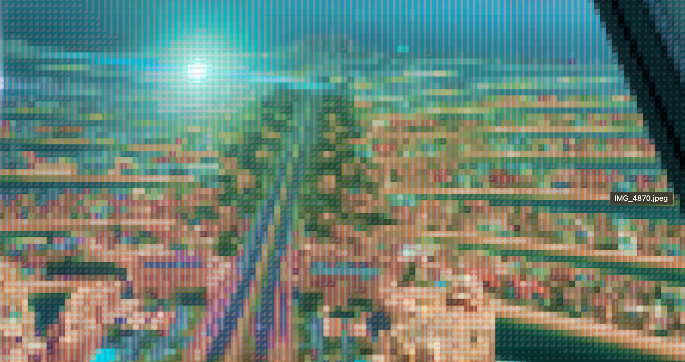

PERSONAL BLOG█
Thoughts, stories, and reflections from my travels, studies, and everyday life. I write about the places I visit, the things I learn, and the experiences that shape how I see the world.

Last Two Weeks of Europe
Paris, wild camping on Mt Ventoux for the Tour de France, Monaco supercars, Cinque Terre cliff jumping, and the churches of Rome.

Lady Margaret Hall, Oxford
Three weeks studying AI and Machine Learning at Oxford University. Punting, the Oxford Union, the British Museum, and friends from 50 countries.

From Greece to Oxford
Prague Castle, the Berlin Wall, Cologne Cathedral — the single most impressive thing I have seen — and the canals of Amsterdam.

My Travels Through Europe So Far
Dubai, Athens, sailing the Greek islands on the Abby Rose, and the Acropolis. The first 10 days of a seven-week journey through Europe.